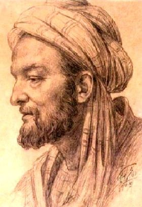

Ýbn Sina (981-1037)

Dünyadaki bütün ilim erbabý tarafýndan, dünyanýn gelmiþ geçmiþ en büyük alimlerinden biri olarak kabul edilen büyük Ýslam alimi ve filozofu Ýbn Sina, tahminen 981 tarihinde Buhara'nýn Efþene Köyü'nde doðdu. Belh'li olan babasý Abdullah, Samanoðullarý (Samani) hükümdarý Nuh b. Mansur zamanýnda baþþehirleri olan Buhara'ya gelerek buraya yerleþti. Abdullah Ýsmaililerle temasa geçerek onlarýn da etkisiyle evini felsefe, geometri ve matematik ile ilgili konularýn tartýþýldýðý bir mekan haline getirdi. Ýbn Sina böyle bir ortamda büyüdü.Olaðan üstü bir zekaya sahip olduðundan daha çok küçük yaþlardan itibaren dikkatleri üzerine çekmeye baþladý. Önce Kur'an-ý Kerim'i hýfz etti. Dil, edebiyat, fýkýh ve akaid derslerini okudu. Fýkýh derslerini Ebu Muhammed Ýsmail b. Hüseyin ez-Zahid, dil ve edebiyat derslerini Ebu Bekir el-Berki ve geometri, aritmetik, felsefe derslerini de babasýndan aldý. Kýsa sürede hocalarýndan aldýðý dersleri tamamlayan Ýbn Sina, hocalarýnýn yetersiz olduðu konularda kendi kendine araþtýrma yaptý ve bir çok eser okudu. Bir çok alanda zamanýnýn ileri gelen alimleri seviyesine ulaþtý ve daha sonra týp ilmi üzerinde yoðunlaþmaya baþladý. Bu alanda, Sehl Ýsa b. Yahya el-Mesihi ve saray hekimi olan Ebu Mansur Hasan b. Nuh el-Kumri'den dersler aldý. Hocalarýndan aldýðý derslerin dýþýnda kendi kendine okuduðu týp ile ilgili eserlerden sonra bu alanda ve eczacýlýkta çok önemli bir seviyeye ulaþtý.
Müspet bilimlerin yanýnda din ilimlerini de ihmal etmeyen Ýbn Sina, fýkýh ilminde de eðitimini sürdürerek girdiði ilmi tartýþmalarýn da etkisiyle önemli bilgilere sahip oldu. Din bilimleriyle fen bilimlerini bir arada öðrenmeye devam ederek týp alanýndaki baþarýsýndan dolayý saray hekimliðine atandý; ve uzun süre bu görevini sürdürdü. Bu arada zengin saray kütüphanesinden istifade etmeyi ihmal etmedi. Daha önce ulaþamadýðý bir çok esere ulaþarak okuma fýrsatýný elde etti.
Samanoðullarý Devleti'nin yýkýlmasýndan sonra bazý sýkýntýlar yaþadý. Buhara'dan ayrýlarak Gürgenç'e yerleþti. Burada karþýlaþtýðý Biruni ve diðer ilim erbabý kiþilerle dostluk kurdu. Ýyi münasebetleri, Gazneli Mahmud'un davetini kabul eden Biruni, Ýbn Irak ve Ýbnü'l-Hammar'ýn ayrýlarak gitmeleri üzerine bozuldu. Kendisi daveti kabul etmediðinden, Gazneli Mahmud'un öfkelenmesine ve takibata uðratmasýna sebep oldu. Bu yüzden Gürgenç'den de ayrýlmak zorunda kaldý. Gittiði yerlerde layýk olduðu ilgiyi görmemekten muzdarip olan Ýbn Sina yedi yýl gibi uzun süren bir yer deðiþtirme döneminden sonra Cürcan'a yerleþerek yaklaþýk iki yýl burada kaldý. Daha sonra Rey, Hemedan ve Kazvin'e gitti. Buralarda idarecilerin yakýn ilgisini gördü ve týptaki baþarýsýný, saray mensuplarýna uyguladýðý tedavilerle ispatladý. Devlet idaresinde vezirlik de olmak üzere bazý görevlerde bulundu. Bir ara devlet idaresindeki karýþýklýklardan dolayý kaldýðý þehri terk ederek Ýsfahan'a gitti. Burada huzurlu bir ortamda yaþayan Ýbn Sina bir ara hastalandý ve daha sonra iyileþti. Hemedan'a yapýlan bir sefere katýldý. Yolda tekrar hastalandý ve vefat edince Hemedan'da defnedildi.
Üstün bir zekaya sahip olmanýn yanýnda çok çalýþkan bir kiþiliðe sahip olan Ýbn Sina, her türlü ilmi münazaraya girmekten kaçýnmadý. Maðlubiyete asla tahammülü olmadýðýndan, bilgisizlikle itham edilmekten asla hoþlanmazdý. Tartýþýlan konularda, bilgisinin yetersiz olduðunu söyleyen muhataplarýný maðlup etmek için yoðun bir çalýþmaya giriþir ve onlarý tekrar tartýþmaya davet ederek kendisini kabul ettirirdi.
Ýbn Sina, Ýslam felsefesi alanýnda Farabi'nin etkisinde kaldý. Bu iki alime göre, din toplum için vazgeçilmez Ýlahi bir kurumdur. Ýbn Sina, Farabi'den kendi dönemine kadar gelen birikimi bir külliyat haline getirip topladý. Bu çalýþmalarýndan dolayý kendisine "eþ-þeyhü'r-reis" unvaný verildi. Ýslam bilim ve düþünce tarihinde felsefe ve ilimlerin ansiklopedisini meydana getiren ilk alimdir. Bilim ve felsefe dili olarak Arapça'yý kullanmasý, ilim dünyasýnda Arapça'nýn ilim dili olarak güçlenmesine katkýda bulundu. Dinin fert ve toplumun mutluluðu için gerekli olduðunu akýlcý bir üslupla açýklamaya çalýþtý. Kur'an-ý Kerim'in esaslarýný usulleriyle, delilleriyle ispat etti (Mektubat, s. 188).
Ýbn Sina dini kavramlarla felsefe kavramlarýný yan yana kullandý. Bu usulle bazý surelerin bir kýsým ayetlerini tefsir etti. Metafizik görüþleriyle dinin iþaretlerini çözmeye çalýþtý. Ýncelediði ayetlerin metafizik ve ahlak felsefesini kuþatan yönleri üzerinde durdu. Ýnsanlarýn mutluluðunun ilahiyat ve nübüvvet bilgisinin bilinmesine baðlý olduðunu ve ancak bu bilgilere sahip olmakla huzura eriþilebileceðini yazdý. Ýhlas Suresi'nin tefsirini yaptýktan sonra, bütün metafiziklerin en son ulaþtýklarý sonuçlarýn bu ayetlerde mevcut olduðunu ve hiçbir metafiziðin bu suredeki ayetleri hakikatlerini aþamayacaðýný bildirdi. Ýslamiyet'in en üstün din olduðunu ve hiçbir þeyi eksik býrakmadýðýný belirtti.
Zamanýnda mükemmel bir dehaya sahip olan Ýbn Sina, Kur'an'a ve Ýslamiyet'e dair bir çok önemli tespitler yaparken özellikle imanýn bazý þartlarý, mesela haþre iman gibi konularda, aczini itiraf ederek, "Akýl buna yol bulamaz" demiþtir (Mektubat, s. 361). Günümüzde, ilimdeki geliþmelere paralel olarak iman esaslarýnýn ispatý, bahusus Risale-i Nur'un da yardýmýyla çok kolay olmaktadýr. Ýbn Sina'nýn felsefe yolundan giderek yaptýðý bazý tespitler ve ileri sürdüðü fikirler tenkit konusu olurken Bediüzzaman Hazretleri onun hakkýnda bazý bilgileri vermektedir. Geçmiþte gizli ve bilinmez olan bazý meselelerin günümüzde, bilinmezlikleri ortadan kalktýðý gibi sýradan hadiseler seviyesine düþtüðünü, geçmiþte Ýbn Sina gibi dahilerin bile keþfedemediði bazý bilgilerin mevcut olduðunu belirtir. Daha sonra þu deðerlendirmeyi yapar. "... Ýbn-i Sina ve emsaline nazarî ve hafî kalmýþlardýr. Halbuki hikmetin bir pederi hükmünde olan Ýbn-i Sina, þiddet-i zekâ ve kuvvet-i fikir ve kemal-i hikemiye ve vüs'at-i karîha noktasýnda bu zamanýn yüzlerce hükemasýyla muvazene olunsa, tereccüh edip ve aðýr gelecektir. Noksaniyet Ýbni Sina'da deðil; çünkü ibn-i zamandýr. Onu nakýs býrakan zamanýn noksaniyeti idi." (Muhakemat, s. 14)
Týp alanýnda mümtaz bir yere sahip olan Ýbn Sina'nýn þöhreti Ýslam Dünyasý ile sýnýrlý olmayýp Avrupa'da da çok önemli bir konuma sahiptir. Bu alanda vermiþ olduðu eserleri asýrlar boyunca üniversitelerde ders kitabý olarak okutuldu. On birinci yüzyýlýn baþlarýnda yazdýðý "Týpta Kanun" (el-Kanun fi't-týb) adlý eseri on üçüncü yüzyýldan itibaren Avrupa üniversitelerinde ders kitabý olarak okutulurken, on yedinci yüzyýlda Vallodolid Üniversitesi'nde adýna kürsü kuruldu. Bir çok alanda eser veren alimin sadece týp alanýnda yazdýðý eserlerin sayýsý kýrký bulmaktadýr.
Eserleri
1- Eþ-Þifa; felsefe ile ilgili olup ansiklopedik bir tarzda yazýlmýþtýr.
2- En-Necat; felsefenin temel konularýný ele alýr.
3- El-Ýþarat ve't-tenbihat; mantýk, tabiiyyat, ihaliyat ve ahlak konularýný ele alýr.
4- El-Mebde ve'l-mead; Metafizik ve ahlak konusunda yazýlmýþtýr.
5- Ahvalü'n-nefs; nefsin tanýmý, teþekkülü, güçleri, bedenle alakasý, ölümsüzlüðü konularýný ele alýr.
6- Lisanü'l-Arab; Arapça sözlük.
7- El-Kanun fi't-týb; týpla ilgili en önemli eseridir.
8- El-Urcuze fi't-týb; bir önceki eserinin özeti mahiyetindedir.
Bunlarýn dýþýnda bir çok eseri mevcut olup çok sayýda risale de yazdý. Tesbit edilebilen risalelerin sayýsý yüze yakýndýr.